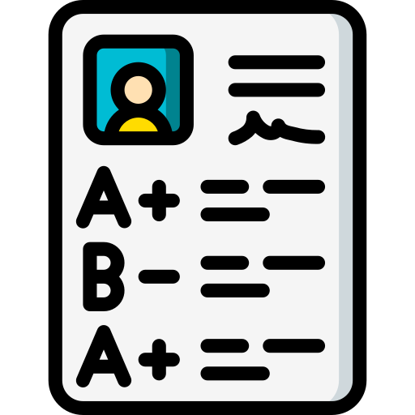

Sheila Alvita Malakian
shei.sheilaalvita@gmail.com | linkedin.com/in/sheila-alvita-malakian/
/img/npm.png) |
241131006 | /img/kelamin.png) |
Perempuan | |
| Bandung, 27 April 2004 |  | 3.99 |
Mahasiswa Sistem Informasi dengan pengalaman sebagai Quality Assurance dan IoT Developer. Berpengalaman dalam manual testing, dokumentasi teknis, dan pengembangan prototype IoT. Memiliki minat pada bidang Quality Assurance dan Technical Writer. Mudah beradaptasi dan dapat bekerja baik secara langsung di tempat atau secara remote.
PENDIDIKAN
Universitas Widyatama
Sistem Informasi
2024 - Present
SMK Negeri 1 Cimahi
Sistem Informatika Jaringan dan Aplikasi (SIJA)
Juli 2020 - Mei 2024
PENGALAMAN KERJA
PT Rastek ID
Quality Assurance
September 2024 - Present
- Melakukan manual testing terhadap fungsional dan visual UI pada aplikasi berbasis web dan mobile.
- Mengidentifikasi dan melaporkan lebih dari 200 temuan (bug, isu, dan kesalahan) selama pengujian aplikasi, yang didokumentasikan secara terstruktur di Google Docs, Google Spreadsheet, dan/atau Trello.
- Membuat dan mengelola Daily Testing Report untuk merangkum hasil pengujian harian sebagai laporan perkembangan testing.
- Terlibat dalam pembuatan dan pengisian User Acceptance Testing sebagai dokumentasi dari pengujian.
- Bekerja sama dengan Project Manager dalam pembuatan User Guide sebagai panduan penggunaan fitur dan workflow pada aplikasi website maupun mobile untuk client/user.
PENGALAMAN MAGANG
PT Rastek ID
IoT Developer
Juli 2023 – September 2024
- Membuat User Interface Design untuk LCD Touchscreen.
- Melayani client dan melakukan konfigurasi 33 panel controlling secara remote.
- Melakukan konfigurasi pada PUSR USR-N510.
- Melakukan setting jaringan internet pada Mikrotik RB941-2nD.
- Berhasil menyelesaikan proyek “Prototype Smart Access Lock Menggunakan NodeMCU ESP8266 dan RFID RC522”.
KEAHLIAN PROFESIONAL
| Testing Tools | : Manual Testing, Katalon Studio |
| Documentation Tools | : Google Docs, Google Spreadsheet, Trello |
| Office Tools | : Microsoft Word, Microsoft Excel |